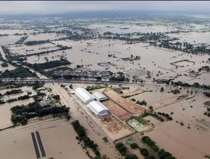

2021年全国各种自然灾害共造成1.07亿人次受灾

中新网1月23日电 据应急管理部微信公众号消息，2021年，我国自然灾害形势复杂严峻，极端天气气候事件多发，自然灾害以洪涝、风雹、干旱、台风、地震、地质灾害、低温冷冻和雪灾为主，沙尘暴、森林草原火灾和海洋灾害等也有不同程度发生。全年各种自然灾害共造成1.07亿人次受灾，因灾死亡失踪867人，紧急转移安置573.8万人次；倒塌房屋16.2万间，不同程度损坏198.1万间；农作物受灾面积11739千公顷；直接经济损失3340.2亿元。
一、灾害阶段性区域性特征明显，全年呈现“上轻下重、南轻北重”态势
二、极端性强降雨过程频发，华北、西北地区洪涝灾害历史罕见
三、龙卷风等强对流天气突发，风雹灾害点多面广
四、全国旱情总体偏轻，局地发生阶段性旱情
五、台风登陆数量偏少，“烟花”台风对华东地区造成较大影响
六、地震活动强度增强，西部地区发生多起强震